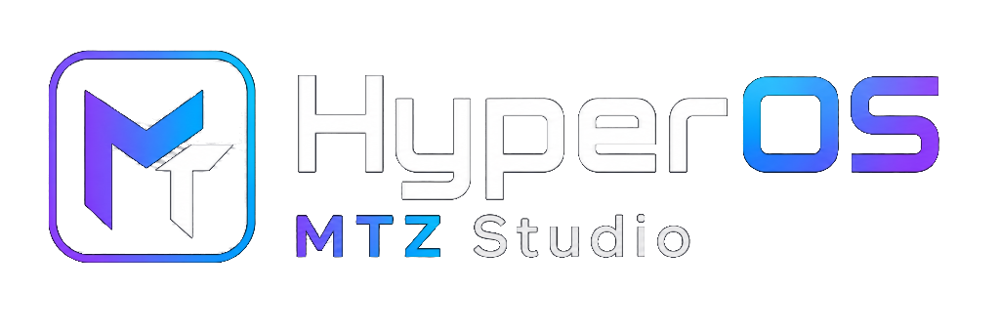

v5.0 SÜRÜMÜ
ROOT / SHIZUKU
HYPEROS NATIVE
HyperOS MTZ Studio
HyperOS için üçüncü taraf MTZ temalarını doğrudan içe aktarın, şifresiz düzenleyin, dönüştürün ve bileşenleri birleştirin. Yeni v5.0 mimarisi ile daha hızlı ve kararlı.
- MİMARİ Native MTZ Engine v5.0
- GEREKSİNİM Android 12+ / Shizuku / Root
- DAĞITIM GitHub Releases